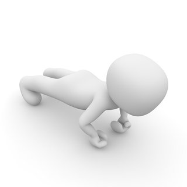
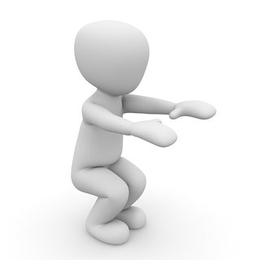
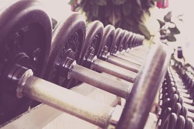
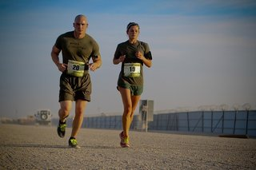

Sporten kan u op meerdere locaties, u hoeft niet noodzakelijk elke dag naar de fitness gaan om uw oefeningen te doen. Hieronder vindt u enkele locaties waar u oefeningen kan uitvoeren en welke oefeningen u gemakkelijk uit kan voeren.
Thuis
Thuis trainen is voor vele mensen zeer makkelijk. Het is makkelijker in te plannen omdat u niet speciaal naar de fitness moet rijden om uw schema af te gaan werken. Er zijn veel oefeningen die u zelf thuis kan doen.
Hieronder vind u enkele voorbeelden:
Sit-ups
U legt hiervoor best iets zacht op de grond waar u kan op liggen. U plaatst uw voeten stevig op de grond met uw benen gebogen. Daarna probeert u uw bovenlijf omhoog te brengen richting uw benen. Bij deze oefening hoeft u uw bovenlijf niet te hoog te brengen.
Push-ups
U plaatst uw handen op de grond, strekt uw benen en steunt op uw tenen. Hierna gaat u door uw armen zakken en weer terug omhoog.

Een voorbeeld van een push-up
Squads
U plaatst uw benen uit elkaar en buigt door uw knieën terwijl u uw bovenlijf zo stabiel mogelijk houdt. Hierna komt u terug naar boven.
Squads tegen de muur

Een voorbeeld van een squad
Bij deze variant doet u squads tegen de muur. Hierbij is het de bedoeling dat u wat langer door uw benen gaat voor u terug omhoog komt.
Trappenlopen
Dit is een zeer simpele oefening voor thuis, u gaat een paar keer op en af de trap. Dit is ook goed voor de conditie.
Steppen
U gaat voor de trap staan en stapt op de eerste trede, en stap dan terug naar beneden. Dit herhaalt u een tiental keer.
Fitness
Als u in de fitness gaat sporten, hebt u alle middelen voor handen. Het beste dat u hier kunt doen is vragen naar een gespecialiseerd programma. Op de meeste plaatsen is dit mogelijk, en deze programma’s worden speciaal voor u opgesteld. Bij dit programma wordt rekening gehouden met uw leeftijd, lengte en gewicht. Er wordt ook rekening gehouden met mogelijke klacht (bijvoorbeeld: rugklachten, nekklachten,…) en met de doelen die u wilt bereiken.

Op vakantie
Op vakantie gaan is voor iedereen ontspanning, maar dat hoeft niet te betekenen dat u niet meer kan trainen. Want op vakantie gebeurt het vaak dat u te weinig beweging krijgt tegenover de hoeveelheid verleiding voor allerlei lekkers. Maar er zijn een paar simpele trucjes om uw lichaam toch in form te houden. Deze oefeningen zijn minder bedoeld voor een bepaalde spiergroep, maar richten zich meer op het onderhouden van uw conditie.
Sit-ups
Wanneer u op het strand bent, kan u simpelweg uw handdoek op het zand leggen, uw voeten in het zand bevragen en sit-ups doen.
Lopen
Een simpele manier om uw conditie te onderhouden is ’s morgens een stukje te gaan lopen over het strand. Of u kan ’s avonds ook een strandwandeling maken. Wandelen of lopen over zand vraagt een grotere inspanning dan gewoon wandelen of lopen.

"Gewicht"heffen
Hydratatie is sowieso belangrijk, maar het kan ook goed van pas komen. Pak 2 plastic flesjes drinken en gebruik deze als gewichten. Hiermee kan u uw armspieren blijven gebruiken.
Zwemmen
Zwemmen is ook een goede manier om uw conditie te onderhouden. En op vakantie is dit een zeer voor de hand liggende sport.
Animatie
De meeste hotels hebben ook een animatieteam, deze organiseren ook vaak sportieve activiteiten. Dit is vaak ook een leuke manier om te sporten op vakantie.
Fitness
Vele hotels hebben een fitnessruimte ter beschikking voor hun gasten. Wanneer u uw fitnessschema wil blijven volgen is dit een goede manier om dit te doen.
Op het werk
Onderzoek wijst uit dat sporten tijdens het werken de arbeidsproductiviteit verhoogt, en dit hoeft helemaal niet moeilijk te zijn. Er zijn heel simpele oefeningen om oefeningen uit te voeren, zelfs aan uw bureau. Hieronder vindt u simpele oefeningen en ook voor welke spiergroep deze oefening goed is.
Bovenbenen en billen
Deze oefening komt zeer sterk overeen met een squad. U houdt uw zitvlak iets boven uw stoel, om deze houding aan te houden zul je deze spieren moeten aanspannen. Enkele millimeters boven de stoel is al voldoende, hierdoor kan je deze oefening uitvoeren zonder dat iemand je ziet.
Biceps
U kan uw biceps makkelijk trainen door uw vuisten onder uw bureau te houden en vervolgens tegen de onderkant van uw bureau te drukken. U duwt uzelf hierdoor in feite naar beneden. En doordat uw stoel weerstand biedt blijft u roerloos zitten, waardoor niemand iets zal merken. Uzelf zal wel snel merk dat uw biceps flink wat kracht moeten leveren.
Triceps en borstspieren
Bij deze oefening drukt u met uw vuisten naar onderen, terwijl u ze aan de bovenkant van uw bureau neerlegt. Doordat het bureaublad weerstand biedt beweegt uw lichaam zich niet.
Buik
Uw buikspieren kan u ook prima trainen op het werk. Ga iets onderuitgezakt op uw stoel zitten en ga met uw billen op het uiteinde van uw stoel zitten. Daarna laat u uw onderrug ‘zweven’ en gaat u met uw schouderbladen tegen de rugleuning aanzitten. Span vervolgens uw buikspieren op zodat uw schouderbladen los komen van de rugleuning. Houd dit tien seconden vast en herhaal dit enkele malen.
Bovenbenen
Uw bovenbenen kan u versterken door een gewone rechte zithouding aan te nemen waarbij uw knieën een hoek van 90 graden maken. Til vervolgen afwisselend één been iets op, hierdoor voelt u uw bovenbenen aanspannen.
Kuiten
Uw kuiten kan u op het werk trainen door een neutrale zithouding aan te nemen. Vervolgens moet u uw tenen optillen terwijl u uw hielen op de grond laat staan. Hierdoor spannen de kuiten zich aan.